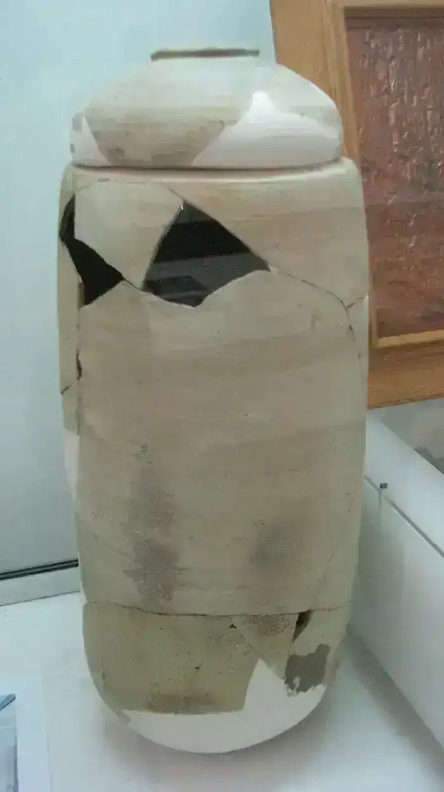
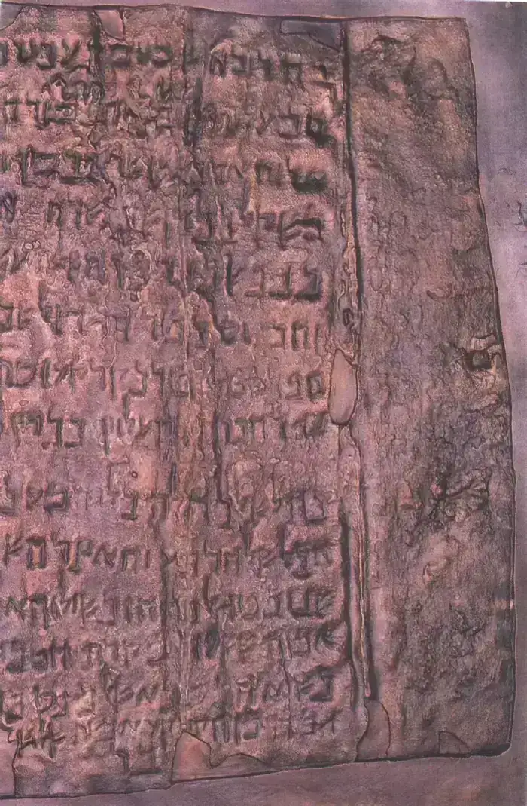
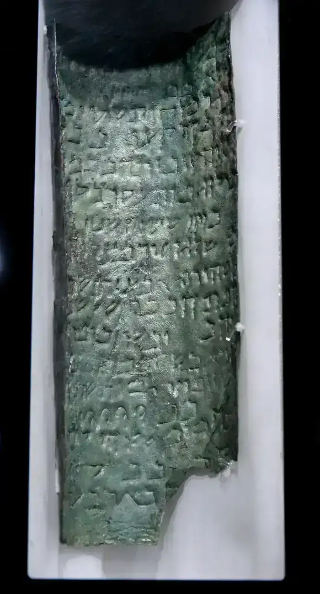

The object
The Copper Scroll (3Q15) was found in 1952 in Cave 3 at Qumran: two rolled sheets of copper, corroded into a solid mass. Because it could not be unrolled, it was cut into strips in Manchester in 1956 and read from the fragments.
Maps, diagrams and images






Its text is unlike the rest of the Dead Sea Scrolls. It is a list — sixty-four entries — of hiding places, each with a description and a quantity of gold, silver or vessels. The totals, if taken literally, run to tens of tonnes of precious metal.
The argument
If the list is a real inventory, it describes the treasure of the Second Temple, hidden before the Roman destruction in 70 CE — which would make it the most valuable document in the collection. If it is not, it is a literary or folkloric object, or a record of a much smaller cache.
Searches have been conducted at several of the locations. None has produced treasure. The language is Mishnaic Hebrew, later than the other scrolls, and some of the place names are otherwise unknown.
Documented: the scroll, its text, and its sixty-four entries.
Documented: its language and physical form differ from the other Qumran scrolls.
Not established: that the treasure is real, or that it was the Temple's.
Not found: any of it, at any of the locations searched.
The honest label: live debate — a genuine document whose reference is unknown, in a field where the answer would be worth a great deal.
Why it is in the archive
Because it is the archive's best case of a document that is definitely authentic and definitely not understood — and because 'the treasure is still out there' is a claim that has survived seventy years of searching without a single find.
Open resources on this topic
- BookThe Copper Scroll Bible — Michael Hearns · 2019 (Internet Archive, free to read)
- BookThe treasure of the Copper scroll : the opening and decipherment of the most mysterious of the Dead Sea scroll — Allegro, John Marco, 1923- · 1960 (Internet Archive, free to read)
- BookThe mystery of the Copper Scroll of Qumran : the Essene record of the treasure of Akhenaten — Feather, Robert · 2003 (Internet Archive, free to read)
- PapersOpen-access articles: DOAJ · PubMed Central · Internet Archive Scholar
- BooksPublic-domain and borrowable copies: Open Library · Project Gutenberg · Google Books
Cite this page
Momin, S. (2026). The Copper Scroll. The Larger World Archive. https://drsamonline.github.io/LARGE_GLOBE/copper-scroll.htmlMomin, Sohil. “The Copper Scroll.” The Larger World Archive, 2026, https://drsamonline.github.io/LARGE_GLOBE/copper-scroll.html.Momin, Sohil. “The Copper Scroll.” The Larger World Archive, 2026. https://drsamonline.github.io/LARGE_GLOBE/copper-scroll.html.@misc{the2026copper,
author = {Momin, Sohil},
title = {The Copper Scroll},
year = {2026},
howpublished = {The Larger World Archive},
url = {https://drsamonline.github.io/LARGE_GLOBE/copper-scroll.html},
note = {Last reviewed 20 November 2026}
}Last reviewed 20 November 2026 · Corrections policy · this page is not peer reviewed
Sources for this page
- Wikipedia, “Copper Scroll” — the object, the text and the interpretationsen.wikipedia.org
- Wikipedia, “Dead Sea Scrolls” — the collection it belongs toen.wikipedia.org
- Wikipedia, “Second Temple” — the treasure it may describeen.wikipedia.org
- Wikipedia, “Qumran” — the site and the cavesen.wikipedia.org